J'aime cette image parce que cette tortue est mignonne.
La tortue d’hermann est une tortue de terre et avant tout un animal sauvage
qui vit et mange de manière totalement autonome. Le mieux est donc d’apporter autant que
possible l’alimentation d’une tortue hermann qui se trouve naturellement dans la nature.
Tortue Galapagos
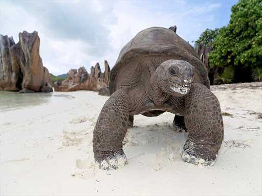
J'aime cette tortue parce que elle est grosse.
Les tortues géantes des Galápagos sont un complexe de dix espèces1, si proches
que certains les considèrent comme des sous-espèces d'une espèce unique Chelonoidis nigra au
sens large. Elles constituent l'un des animaux les plus emblématiques de la faune des îles
Galápagos : elles sont endémiques dans les neuf îles de l'archipel.
Cette tortue terrestre, plus communément appelée Galápago, mesure 1,2 m et pèse en moyenne
autour de 220 kg, mais elle peut atteindre, suivant l'espèce, jusqu'à une masse record
enregistrée de 422 kg. L'espérance de vie (ou longévité moyenne) d'une tortue sauvage est
inconnue, mais on l'estime de 150 ans à 200 ans.
Tortue Alligator
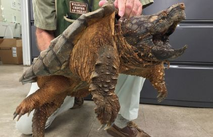
J'aime bien cette tortue, mais je ne sais pas pourquoi.
ette espèce dispose d'une carapace foncée, brun-noir, souvent recouverte
d'algues. Ses marginales sont très dentelées. Elle n'est pas capable de rentrer toute sa tête.
Elle dispose d'un bec caractéristique muni d'un appendice sur la mâchoire du haut et sur la
mâchoire du bas. C'est la seule tortue à disposer d'un leurre. Cet appendice mobile est formé au
bout de la langue et sert à attirer les poissons.
Tortues Marines
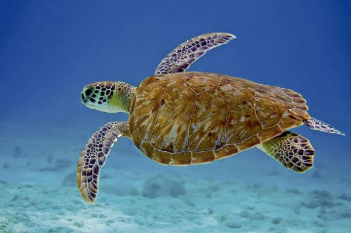
J'aime les tortues de mer parce que elles naissent dans le sable
Les tortues marines sont les tortues de la super-famille des Chelonioidea1.
Elles sont présentes dans tous les océans du monde à l'exception de l'océan Arctique.
La tortue luth est la plus grande, mesurant 2 m de long, de 1 m à 1,5 m de large et pesant 600
kg. La taille moyenne des autres espèces va de 50 cm à 1 m et est proportionnellement moins
large.
Ces espèces sont toutes vulnérables ou menacées. Elles font localement l'objet de protection ou
de plan de restauration, mais la pollution, le braconnage et les prises accidentelles par engins
de pêche restent des causes préoccupantes de recul de populations, déjà très relictuelles.
Gecko
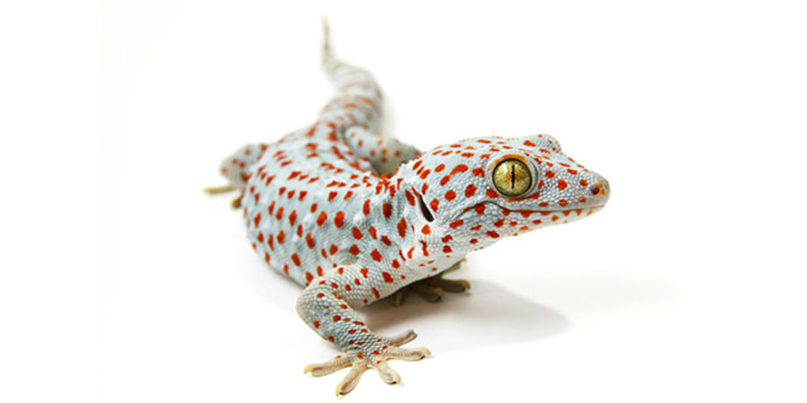
J'aime ce lézard parce que il a de belles couleurs
Le Gecko, ou Gekkota, appartient à la classe des reptiles et fait partie de
l’ordre des Squamates, qui englobe tous les lézards. Ce petit reptile, dont l’origine remonte à
50 ou 60 millions d’années, compte plus de 800 espèces, que l’on peut rencontrer dans de
nombreux pays différents. Son nom lui vient du bruit qu’il produit: ge-ko.
Lézards des murailles
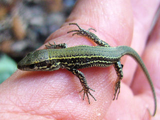
J'aime ce lézard parce que je le trouve mignon
C'est un lézard, de forme élancée, espèce extrêmement polymorphe, avec une
variabilité extraordinaire de l'écaillure, une coloration très variable, brun, gris ou même
verdâtre. La face ventrale est claire, jaune, bleu ou rougeâtre. La gorge est mouchetée de noir.
Caméléons
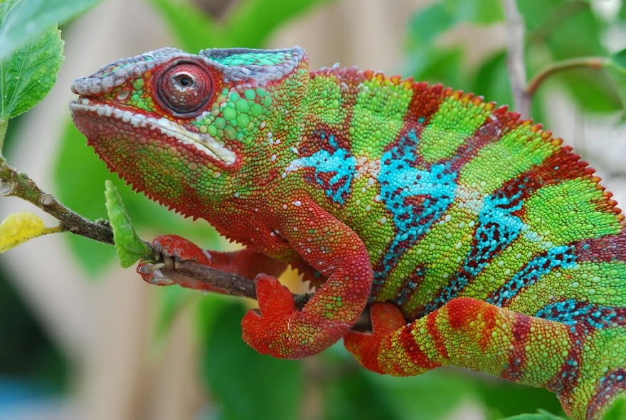
J'aime le caméléons parce que il peut s'accorcher aux branches
Ce sont des animaux qui se caractérisent par la mobilité indépendante de leurs
yeux, leur langue protractile qui leur permet d'attraper leurs proies à distance, les doigts
groupés en deux blocs opposables assurant une bonne prise sur les branches, leur capacité à
changer de couleur, et enfin leur queue qui sert à se stabiliser.
Dragon de Komodo
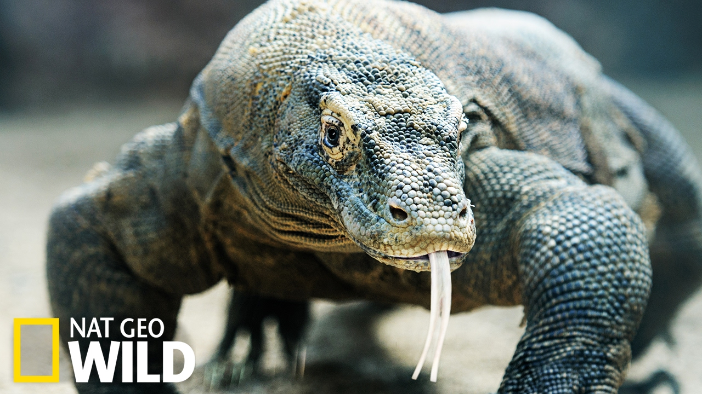
Celui-ci fait peur...
Les dragons de Komodo ont été découverts par les scientifiques occidentaux en
1910. Leur grande taille et leur réputation d'animaux redoutables les ont rendus populaires dans
les zoos. Dans la nature, leur aire de distribution s'est vue réduite en raison des activités
humaines et ils sont considérés par l'UICN comme menacés. Ils sont protégés par la loi
indonésienne et un parc national, le parc national de Komodo, a été fondé pour favoriser leur
protection.
Anolis vert
J'aime ce lézard parce il est rigolo
Comme son nom l'indique, la couleur de l'anolis est d'un vert vif, mais
celle-ci peut tourner au brun ou marron sous l'influence de plusieurs facteurs, tels que
l'émotion et l'état d'esprit de l'individu, le camouflage dans l'environnement, ainsi que la
température. Le ventre reste toujours de couleur blanche ; on peut remarquer un cercle brun ou
vert autour de l'œil. L'anole vert passe du vert au brun pour différentes raisons. Le
camouflage, la température et les émotions sont les principaux facteurs du changement de
couleur.
Boa constricteur
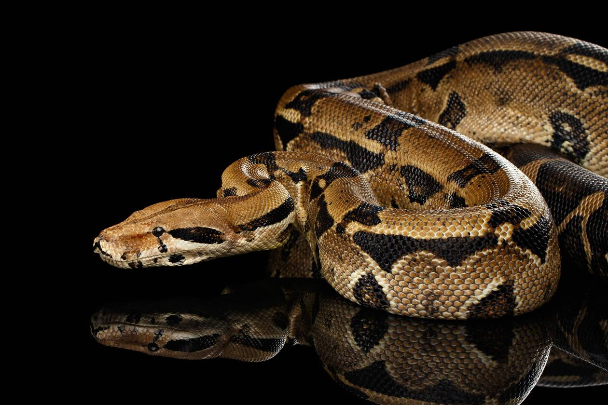
J'aime ce serpent parce que il grimpe aux arbres
Sa taille varie selon la sous-espèce et le sexe et est comprise entre 1,50 m à
4,20 m (mais dépasse rarement les 3,50 m) pour un poids moyen de 6 à 16 kg (mais les plus gros
spécimens, essentiellement des boas constrictor constrictor, peuvent peser jusqu'à près de 30
kg). Le dos de ce serpent comporte des macules sombres.
Python
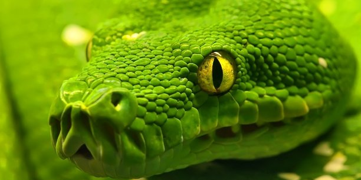
J'aime ce serpent parce que il à un oeil avec un trait
Le Python est un serpent qui vit au Centre de l'Afrique et dans les régions
chaudes du Globe comme le Sénégal entre autres.
Ce serpent mesure entre un mètre et un mètre et demi. Son corps est trapu et couvert d'écailles
jaunes, beiges et brunes.
Sa force est extraordinaire. En cas de danger il s'enroule sur lui même et il ne faut surtout
pas essayer de le dérouler car il pourrait mordre et se venger.
Il est actif surtout la nuit et se nourrit de rongeurs vivants. Certains pythons de grande
taille peuvent s'attaquer à des petits cochons, des moutons et des chèvres.
Le python n'est pas venimeux, il tue ses proies en s'enroulant autour d'elles et en les serrant
jusqu'à ce qu'elles meurent et les avale ensuite.
Laticauda colubrina
J'aime ce serpent parce que il a des traits et il nage
Laticauda colubrina est une espèce de serpents marin de la famille des
Elapidae1, appelée communément tricot rayé à lèvres jaunes ou tricot rayé jaune, plature
couleuvrin, ou cobra de mer. D’autres espèces de tricots rayés font partie du genre Laticauda.
Couleuvre
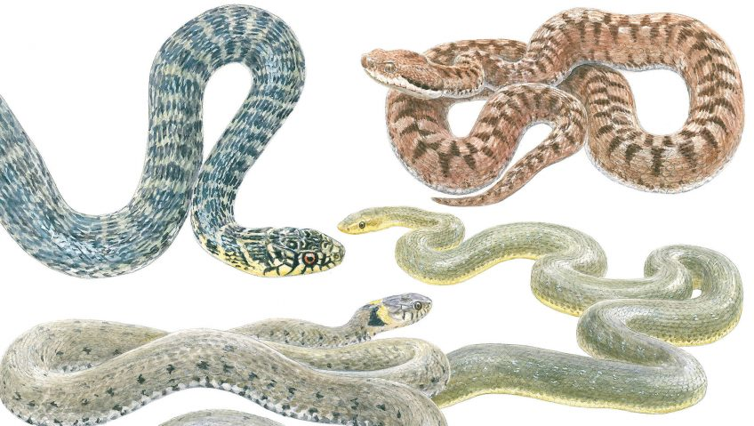
J'aime ce serpent parce que il n'est pas venimeux
La couleuvre est un serpent très commun en France que nombre d’entre nous
rencontrent fréquemment au cours d’une promenade dans la nature ou tout simplement en plein cœur
de leur jardin. Craintive et inoffensive, la couleuvre fait pourtant peur à nombre de personnes
qui éprouvent une véritable phobie pour les reptiles ou la confondent avec la vipère.
Vipère épineuse
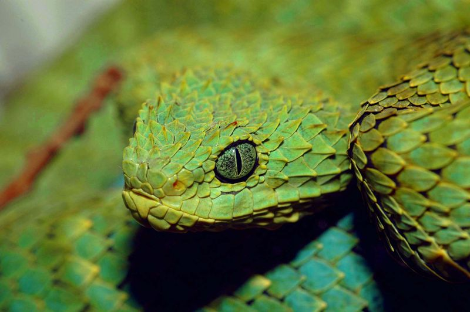
J'aime ses épines et son nom
C'est un serpent venimeux possédant des écailles dorsales lui donnant un
aspect très épineux.
Son venin est neurotoxique, il peut être mortel pour un être humain n'ayant pas reçu de soins
appropriés après la morsure ; il reste toutefois moins dangereux que d'autres espèces.
Il est nocturne et chasse des grenouilles, lézards, petit mammifères et parfois des oiseaux.
Il a une longueur maximal de 70cm.